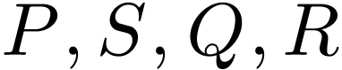
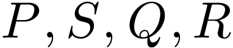

题目  枚铝币和枚铜币,
以任意初始方式排成一排.
定义一条链为任意由相同类型货币构成的连续子列.
给定正整数，玛丽安重复地进行如下操作：她找出包含（从左到右）第
枚铝币和枚铜币,
以任意初始方式排成一排.
定义一条链为任意由相同类型货币构成的连续子列.
给定正整数，玛丽安重复地进行如下操作：她找出包含（从左到右）第 枚硬币的最长链.
然后把该链中所有货币移到序列最左端.
枚硬币的最长链.
然后把该链中所有货币移到序列最左端.
|
题目 枚铝币和枚铜币,
以任意初始方式排成一排.
定义一条链为任意由相同类型货币构成的连续子列.
给定正整数，玛丽安重复地进行如下操作：她找出包含（从左到右）第枚硬币的最长链.
然后把该链中所有货币移到序列最左端.
例如，时，对于初始序列AABBBABA,过程如下：
求所有满足 的数组,使得对任意初始序列，都可以在有限次操作内使左端为枚相同的货币.
的数组,使得对任意初始序列，都可以在有限次操作内使左端为枚相同的货币.
题目
题目  中的元素放置在一个圆周上，满足任意两个相邻元素的乘积均可以写成的形式。（其中
中的元素放置在一个圆周上，满足任意两个相邻元素的乘积均可以写成的形式。（其中 为正整数）
为正整数）
题目  使得. 令直线
使得. 令直线 分别与直线和交于点
分别与直线和交于点 和
和 .
假设在同一直线上按照此顺序排列.
令直线
.
假设在同一直线上按照此顺序排列.
令直线 分别与直线和交于点
分别与直线和交于点 和.
假设在同一直线上按照此顺序排列.
证明落在同一个圆上.
和.
假设在同一直线上按照此顺序排列.
证明落在同一个圆上.
题目
题目 为一正整数.
一个「北欧方阵」是一个包含 至所有整数的方格表，使得每个方格内恰有一个数字.
两个相异方格是相邻的如果他们有公共边.
一个方格被称为「山谷」，若其内的数字比所有相邻方格内的数字都小.
一条「上坡路径」是一个包含一或多个方格的序列，满足：(i)序列的每一个方格是山谷，(ii)序列中随后的每个方格都和其前一个方格相邻，且(iii)序列中方格内所写的数字递增.
试求一个北欧方阵中上坡路径数量的最小可能值，以的函数表示之.
至所有整数的方格表，使得每个方格内恰有一个数字.
两个相异方格是相邻的如果他们有公共边.
一个方格被称为「山谷」，若其内的数字比所有相邻方格内的数字都小.
一条「上坡路径」是一个包含一或多个方格的序列，满足：(i)序列的每一个方格是山谷，(ii)序列中随后的每个方格都和其前一个方格相邻，且(iii)序列中方格内所写的数字递增.
试求一个北欧方阵中上坡路径数量的最小可能值，以的函数表示之.